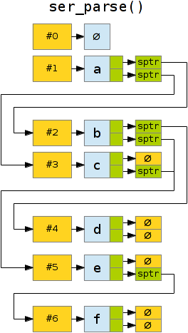

Author(s):
Ulf Åström (happyponyland.net / ulf.astrom@gmail.com)
See also: Function reference
This is a library for serializing structures in C. It will convert a memory range (usually a struct or array) from binary data to a human-readable representation. It can later parse the serialized format and recreate the same structure in memory.
The code is available under the "zlib license" (free for almost any use) and has no dependencies other than the C standard library. This documentation is CC-BY-NC-SA.
Most programs require file input and output to do anything
useful. While it is possible to write data directly from memory to
disk (using fwrite, for example), this has several
problems:
int*_t and others) but
this might not be desirable in all cases. There are also endianness
issues where bytes appear in different order between
architectures.This library provides a solution to the problems above.
The serialized format uses a roughly C-like syntax. It can represent numbers as well as text and provides backslash \escaping for non-printable characters. A shortcut notation ("syntactic sugar") is provided to store strings in a convenient way. The output is in plaintext it should be safe to move between different architectures (regular encodings sti).
You can use C-style /* */ comments for debugging and
taking notes; these are ignored during the inflation process.
Pointers will be replaced with hardware-independent identifiers when they are saved and restored upon loading. Several pointers can address the same memory without creating duplicates [1] in the serialized data. Structures can point at each other, at themselves, or at specific fields within themselves; for this reason the library is well suited for linked lists, trees and even cyclic graphs. (Of course, pointers can also be null.)
Arrays can be static (fixed size) or dynamic (pointer + index), with facilities for retrieving the element count. It is possible to define ragged arrays (pointers to pointers) and null-terminated arrays.
In addition to this each translator can specify a handler function for custom output that can not be expressed with the serializer syntax. For example, you might want to include a base64-coded image.
Deflation and inflation can be used independently. The library can save and load "documents" in an application, but it can also be used only for input or output (debug dumps, for example). Some of the string functions can also be used on their own, though there are probably more complete libraries for that.
[1] When using the "string" type no pointer substitution is performed and several copies of the same string might be created. To get around this, define the field as a reference to a null-terminated char array.
To serialize a structure, the programmer must provide one or more translator. This is a special structure describing the memory layout of the data to be converted. Translators are bidirectional; the same rules are used for both deflation (to text) and inflation (to binary). A translator can contain any number of fields. Each field has:
Primitive types (int, char, etc) will treat the offset as the location
of a member variable of that type. In practice, the address will be
casted according to the type sizes of the system; if sizeof(int) is
four bytes it will print the number present at those four bytes.
The primitive types available are: short, ushort, int, uint, long, ulong, size_t, time_t, intptr_t, uint8_t, uint16_t, uint32_t, int8_t, int16_t, int32_t, float, double, ldouble.
string is a special type; it will
convert char arrays to a convenient representation,
escaping special characters (\, ",
newline and nonprintable) with backslashes.
Static arrays (where the size is known at compile time)
can be defined by specifying a repeat count for a
field.
When serializing a fixed-size array, you must provide the size (in bytes) of all elements. When serializing a dynamic array you provide the size of only one element; inflation will automatically allocate as many as are needed.
Dynamic arrays must be defined as a type of their
own. These differ from static arrays in that they can be variable
length at run-time; thus, they must be declared as pointers. When
parsing a dynamic array, a field tag with a @ followed
by the same name as the array will be used to store the
number of elements read. Example: with the fields int
@array; and char[] array, @array will
contain the number of characters read into array from
input.
User-defined types (anything that isn't a primitive) will be
replaced by references. These follow the
form #n.f[a] where n is a serial number
identifying the structure, f a field tag and a an
array index in that tag. If no a is present it will resolve
to the first (or only) element of f, if f is omitted
it will resolve to the starting address of the containing structure
itself.
Serialization (deflation) takes a pointer to one structure as input and will output a deep copy conversion; every reference to other structures will include that structure as well (if the destination type is included in the translator list). It is easiest to keep all data in a hierarchy under a single struct or array. Entirely separate structures can be serialized individually, but they will only connect references within the same "job". Serialization will not alter the source data in memory.
The process will first collapse the input to a flat meta-format (internally these are called holders; besides structure pointers they also hold some information about types and array counts). It will then work through each structure in order, generate a text representation that it prints to the job buffer. This utilises a variety of type conversions and is also where pointers are converted to references.
Deserialization (inflation) works the other way. It will read all data into a list of holders, allocate memory for the structures and convert primitives from text back to binary numbers. References will be gathered in a list of substitution pointers that are later used to re-establish pointers the way they are intended. If type errors are detected at this stage the process will abort.
It will try to preserve type integrity and not link incompatible
structures. For example, an int pointer will not point to
a long or to another int pointer (even if C
itself allows such casts).
To use this library, add serialize.c to be compiled
into your project and #include "serialize.h"
where you wish to use it.
The example*.c files contain tutorial examples that
demonstrate the library function.
demo.c in the distribution provides more example code
and a couple of test functions for the library.
Version 0.4 (2013-01-13)
Removed pointer redirection (->); substitution pointers are now resolved in another way. Primitives can be serialized on their own (whatever good that will do). ser_new_field() will only take a single offset instead of dummy pointers. bool can be serialized (true and false are considered 1 and 0). Type safety: ser_parse() must be told what type to expect and will fail if it structure #1 does not match. Pointers will not be re-linked if the destination type does not match the reference. null made case-insensitive. Fixed bugs with uint and time_t (it is now assumed to be signed).
Version 0.3 (2012-12-13)
Pointer redirection (if a pointer points within another serialized structure, the memory won't be duplicated. Fixed a bug with element counts. Added support for floating-point numbers (experimental).
Version 0.2 (2012-12-06)
First public release.